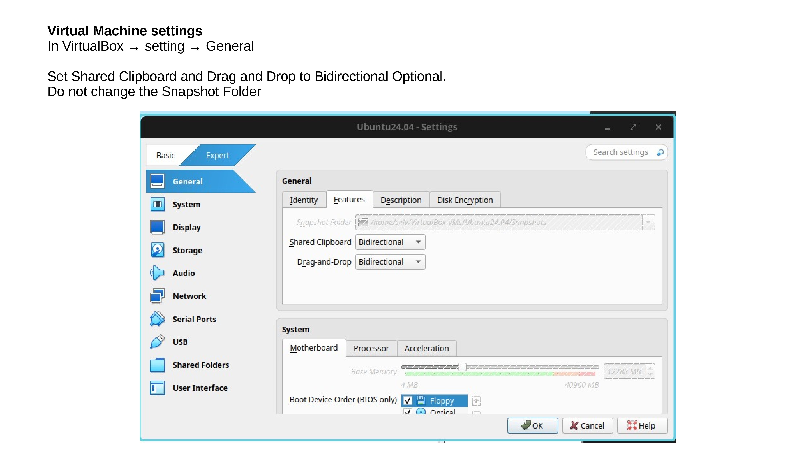
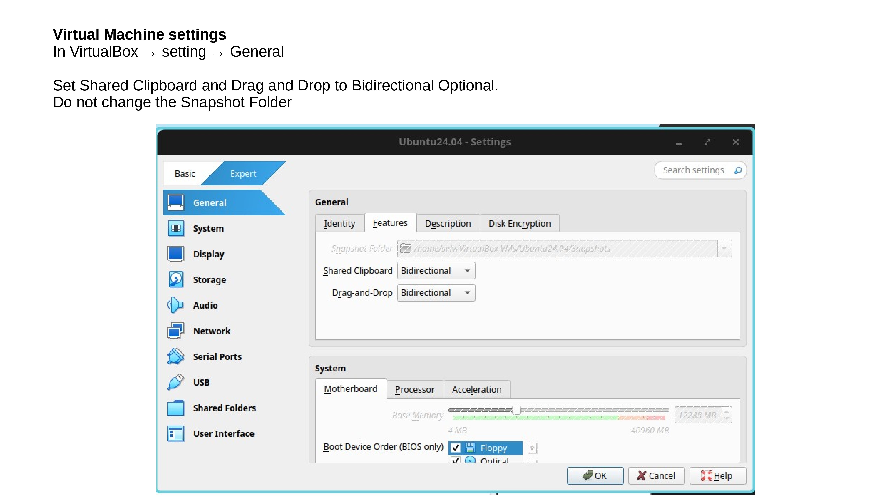
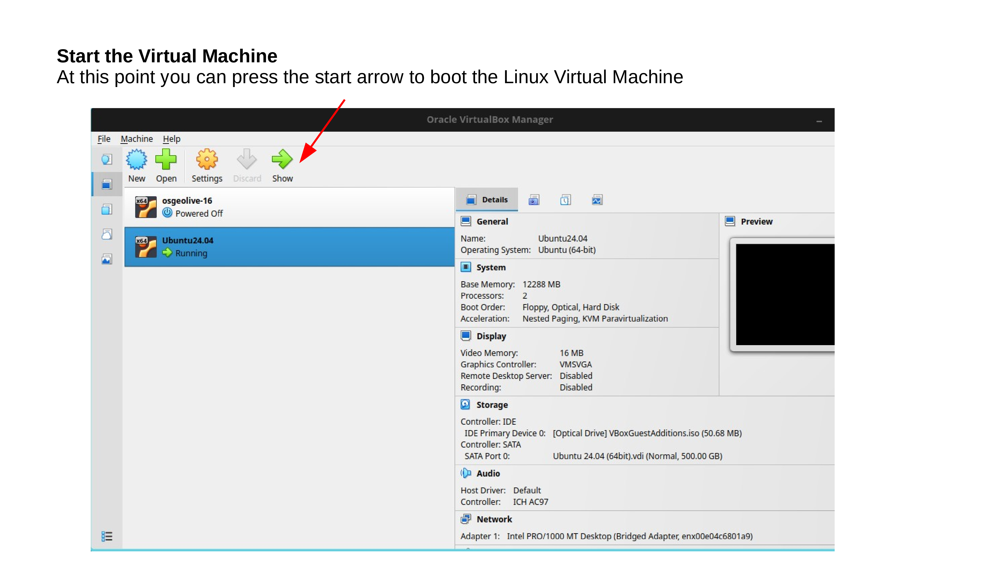
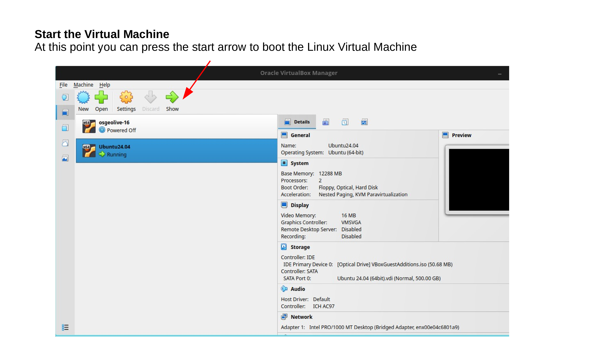

Prepare Ubuntu 24.04 for Spatial Ecology courses
In order to execute the Spatial Ecology exercise we will need first install the Ubuntu 24.04 Linux Virtual Machine and then populate with additional software and data.
Ubuntu 24.04 Noble Numbat is a Linux Virtual Machine, that allows you to try a wide variety of open source geospatial software previous installation anything. It is composed entirely of free software, allowing it to be freely distributed, duplicated and passed around.
You can follow the below instructions. Moreover the Ubuntu 24.04 LTS installation YouTube video even if use another VM image can be used to guide along the full procedure. Pay attention that the video is base on the Osgeolive 13 version, so some differences can be present comparing with the current Ubuntu 24.04 version.
Software requirements
For running a Virtual Machine in your OS we need a virtualization software such as Virtualbox and a vmdk or vdi file that contains the virtualized OS.
Hardware requirements
Hard disk
Be sure to have at least 60 GIGA of free space in your hard disk before to start the VM installation procedure. Avoid the use of USB-external-hard-disk, due that the USB connection will slow down the VM performance.
RAM
Be sure that your computer have at lest 16 GIGA ram (more better). Indeed with the VM running and the zoom session open for following the lecture the 16 GIGA will be barely on the limit.
Install Virtualbox
Open you browser and go to https://www.virtualbox.org/wiki/Downloads and base on your OS download the Virtualbox executable and install it. Be sure you also install the VirtualBox 7.2.0 Extension Pack.

Install Ubuntu 24.04 LTS Noble Numbat
Download Ubuntu 24.04
Open you browser and go to https://www.osboxes.org and proceed to download the Ubuntu 24.04 Noble Numbat for VirtualBox. This action will download the 64bit.7z file. The 64bit.7z is a quite large file therefore according to your Internet connection it can take several hours. When the download is finished unzipped using 7zip. Mac users can use The Unarchiver for unzip the 64bit.7z. A this point you are ready to load the Ubuntu 24.04 (64bit).vdi inside Virtualbox.
Install Ubuntu 24.04 inside Virtualbox
Lunch Virtualbox from OS and follow the below instructions.


 

 



Test your Ubuntu 24.04 LTS Virtual Machine
If you follow all the steps correctly the Ubuntu 24.04 LTS Virtual Machine should pop-up in the Virtual Box window showing something like this:


If the Ubuntu 24.04 LTS start with a black screen with a “kernel panic message” means that there are still some settings that are not allowing the virtualization. This page is a good tutorial for solving the issues in Windows-10 and this one for Windows-11.
Setting you keyboard layout
If are not use the US keyboard you have to add your keyboard layout to the bottom menubar. Therefore click on the spiral on the left bottom corner and write “keyboard” in the search box, and select in settings Keyboard.
Then select “Add Input Source” > “Add” and select your keyboard layout in accordance to your country and language.
Your keyboard layout will appear as below. Move up to select it as default keyboard layout.


Open the terminal and test if the keyboard layout is correct.
Update the OS
The first operation after the installation is to run un update of the OS. Therefore, open the bash terminal and run line by line the following codes. The sudo password is “osboxes.org”. For security what you type is not shown, anyway it is recorded. After typed the password press enter.
Update the OS. This operation can last few minutes. Be patient. If during the installation, some screen pop-up asking some question just accept the default option.
sudo apt update # update the repositories
sudo apt upgrade -y # installation of the sw
sudo apt autoremove -y
Populate Ubuntu 24.04 LTS with additional software
Install geo-software
At this point the Ubuntu 24.04 LTS Virtual Machine is ready to install additional software and data for running Spatial Ecology courses. In the bash terminal run the following lines
cd /tmp/
wget https://raw.githubusercontent.com/selvaje/SE_data/refs/heads/master/exercise/install_additional_sw_data_4SE_courses.sh
sudo bash ./install_additional_sw_data_4SE_courses.sh
as before the sudo password is osboxes.org.
If a prompt asks for user input, just use the arrow keys to select the default option and press Enter.
Test installed additional software
In the bash terminal run the following lines one by one. Close the window that each time pop-up.
Test gdal
gdal_translate --version
You should see the gdal version GDAL 3.8.4, released 2024/02/08
Test pktools
pkfilter --help
You should see the pkfilter manual instructions.
Test OpenEV
source ~/.bashrc
openev
You should see the openev software popup.
Git Settings
The below instructions together with the Git Setting for the Spatial Ecology courses YouTube video can guide along the full procedure to retrieve dataset and material for the courses.
We are going to retrieve dataset and material for the first time using git clone.
cd # enter in user home
git clone https://github.com/selvaje/SE_data # download the data
If the download succeed you should see the SE_data folder
ls -l $HOME/SE_data
Now we need copy the $HOME/SE_data to an independent directory the:
/media/sf_\LVM_shared/my_SE_data
rsync -hvrPt --ignore-existing ~/SE_data/* /media/sf_LVM_shared/my_SE_data
cd /media/sf_LVM_shared/my_SE_data
The /media/sf_LVM_shared/my_SE_data is your working directory. Do not touch the ~/SE_data folder!!
Every time that we need to download more data from the git repository, follow this procedure
cd $HOME/SE_data
git pull
rsync -hvrPt --ignore-existing $HOME/SE_data/* /media/sf_LVM_shared/my_SE_data
cd /media/sf_LVM_shared/my_SE_data
Now you should be ready to follow the lectures of the Spatial Ecology courses.
Remember always to work on /media/sf_LVM_shared/my_SE_data
If for any reason the git pull commands give a synchronized error you need to remove the $HOME/SE_data and repeat the git clone and rsync operation.
cd
rm -ry $HOME/SE_data
git clone https://github.com/selvaje/SE_data
rsync -hvrPt --ignore-existing $HOME/SE_data/* /media/sf_LVM_shared/my_SE_data
cd /media/sf_LVM_shared/my_SE_data
Install jupyter lab
We are going to use jupyter lab as main scripting editor. Here how to install
sudo apt install pipx
pipx ensurepath
pipx install jupyterlab
echo 'export PATH=$PATH:$HOME/.local/bin' >> ~/.bashrc
source ~/.bashrc
Test jupyter lab
jupyter-lab /media/sf_LVM_shared/my_SE_data/exercise/grass_hydro.ipynb
Get familiar with the jupyter lab GUI.